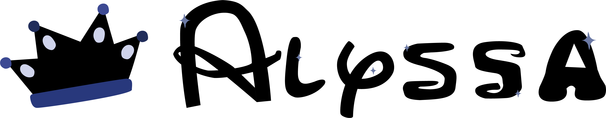

- Hi my name is Alyssa Smith and here are some things about myself! I have been singing ever since I was 6, also I have been doing graphic design ever since I was 13. I started doing graphic design on discord, and I have started singing in a church choir. When i first started doing graphic design i would make banner’s and sell them on discord for money or game currency or game items. Until one day i had stopped because people stoped buying banners and icons from me. When i first started singing i had sang in my chuch choir and then i gave up on singing ever since i moved to delaware from new york. But once i came to cab calloway and i hear everyone singing in the hallways i got inspied to sing again.